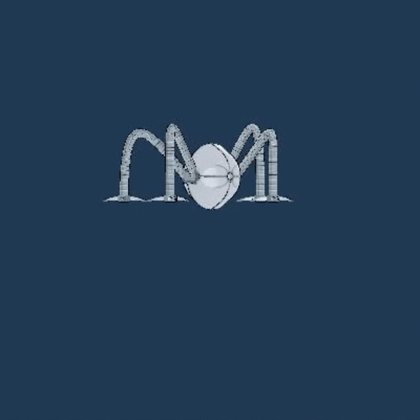
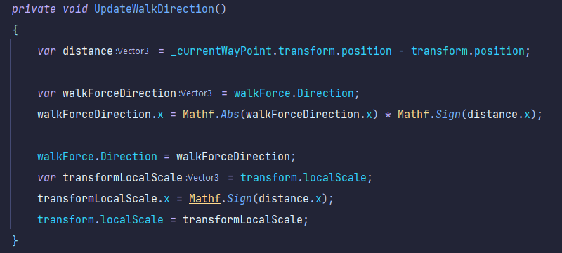
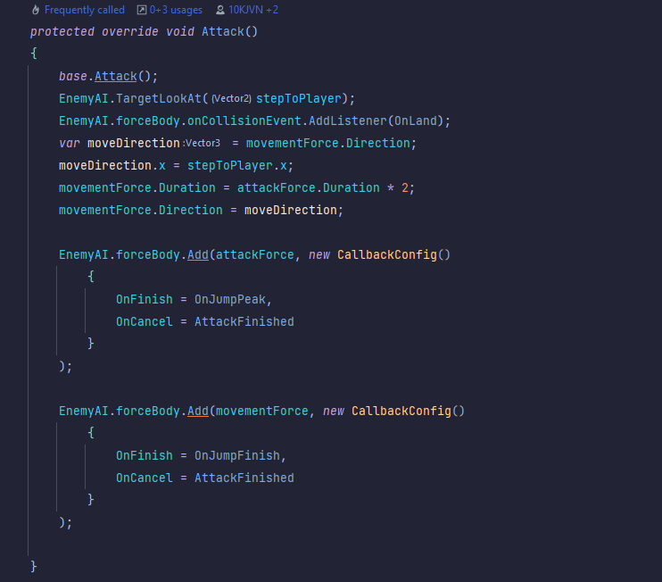
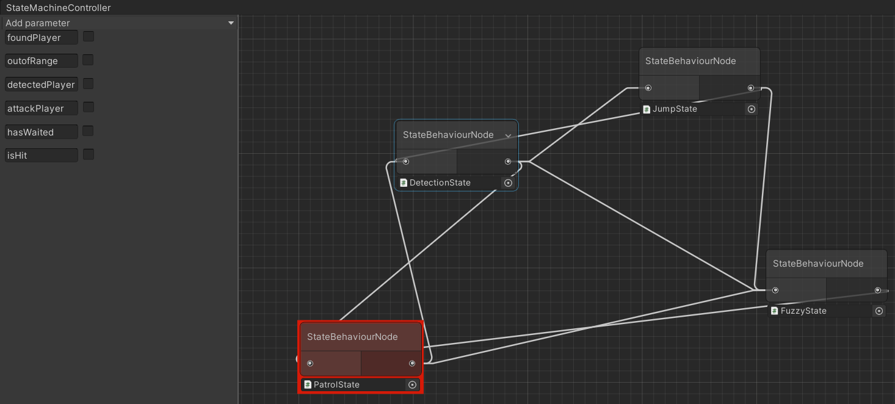

Operation Starfall
Project Status: Completed
Project Type: Professional
Project Duration: 8–12 weeks
Software Used: Unity 2022.3
Languages Used: C#
Primary Role(s): Game Developer
Team: 2 Devs, 1 Artist
About Octodrone
Octodrone was the first ground-based enemy developed for Operation Starfall.
Its design combined state-driven AI, animation cycles, and responsive attack logic.
My Features
Animator & Jump Cycle
I integrated Animator triggers with the enemy's state machine, making sure Octo’s Idle, Walk, Jump, Attack, and Fuzzy states transitioned smoothly. Unity Events were used to time animation transitions such as JumpUp → JumpTop → JumpAttack.
Each of Octo's animations:

In the gif above you can see Octo's Idle, Walking, Jumping, Attacking & Fuzzy animations. Visuals and animations by Alex Kentie.
Patrolling & Detection Logic
Patrol and detection systems already existed in the codebase for flying enemies. Together with the other dev, I refactored and extended this logic to support Octo as the first ground-based enemy. Through pair programming, we adapted pathfinding and detection behavior, so it could handle grounded patrol routes reliably.
A function from our patrolling script:

The snippet shows walkForce direction adjustments. In simple terms: if walkForce is negative, convert it to positive (and vice versa) depending on X-axis position to make Octo face and walk correctly.
Octo patrolling in-game:

Octo's orientation flips correctly thanks to the UpdateWalkDirection logic.
Prefab & Polish
I worked on prefab adjustments and polish, ensuring animations, colliders, and logic worked smoothly together. Collaboration across the dev team meant we frequently supported each other once our own user stories were complete.
Octo Attacking:

The animator's transitions are highlighted when triggered, illustrating how animation events map to gameplay logic.
Takeaway
My main contribution was getting Octo to patrol, detect, and attack consistently while polishing prefab behavior and animation timing. The biggest challenge was understanding the ForceSystem and how it interacted with the state machine, but after debugging and iterating together with the team, Octo’s behavior became stable and feels natural in-game.
JumpState: Octo's unique attack state

This script inherits from the base AttackState.cs.
JumpState.cs coordinates animation events & state transitions.
- 1. Disable gravity and apply an amplified upward force so Octo jumps.
- 2. On a midair event (e.g. jump top), re-enable gravity and apply a forward force toward the player's position.
Along the way I learned about Object-Oriented Programming, Unity Events, and writing clean state-driven logic in a large existing codebase.
Octo's State Machine:

The diagram shows Octo's primary states and transitions (Patrol, Detect, Jump/Attack, Fuzzy).
Official website: neonorigins.com